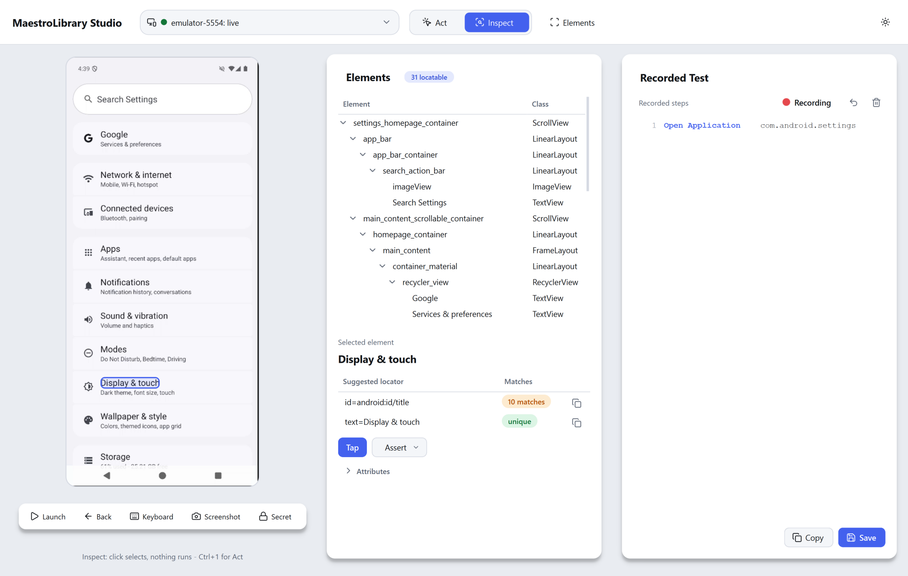
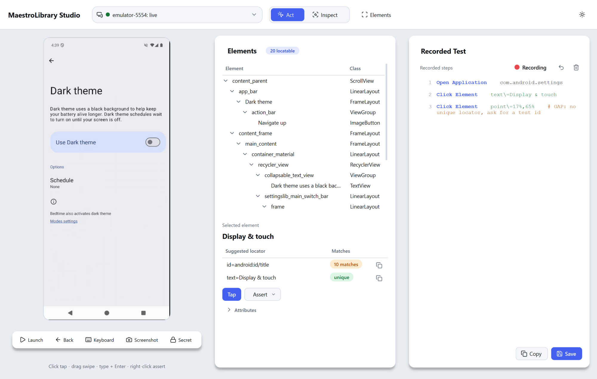

Name every tap.
Robot Framework keywords for mobile apps, driven by Maestro. The AppiumLibrary names, arguments and locators you know, with no Appium server and no capabilities.
What it does
Keywords you already know. Tests you write by tapping.
AppiumLibrary names, no Appium
Click Text, Input Text, the five Wait Until keywords, Swipe, Capture Page Screenshot and more. Maestro waits for the UI on every action, so there are no sleeps.
Tap a phone, get a Robot test
A window shows the device live. Every action runs on it while the matching Robot line is recorded, with a locator and how many elements it matches.
YAML to Robot, and back
Convert a Maestro flow to a Robot test with flow2robot, or set record_flows=True and every command a test sends is written to a flow file.
More than Appium had
Run Flow, app permissions, Set Dark Mode, Set Airplane Mode, Add Media, Screenshot Should Match, and Travel for moving the location.
Logs and mirroring
On Android, every test's logcat is saved to its own file and linked in the log. Optional scrcpy mirroring shows the device while a suite runs.
Six that work
text=, accessibility_id=, id=, regex=, id_regex= and point=. Anything else fails with a clear message.
Studio
Pick an element. Get its locator. Tap it. It writes the line.
Studio's Inspect mode shows each locator with how many elements it matches. Act mode runs your taps on the device and records them as Robot steps. Where an element has no unique locator, Studio records the tap with a note to ask for a test id.


Get started
What you need, and where it runs.
You need
- Python 3.12 or newer
- Maestro CLI and Java 17+
- An Android emulator or device
- adb on PATH
- scrcpy, optional
Works with
- Android emulators and devices
- iOS simulators on a Mac
- Flutter, Compose, React Native
- Windows, Linux and macOS